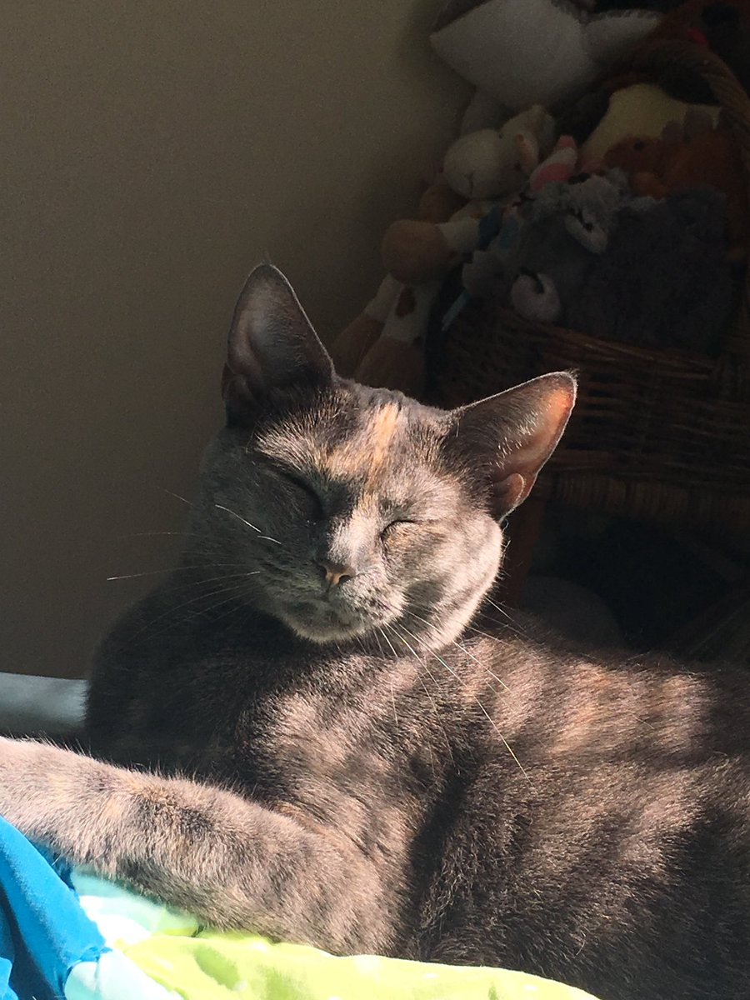
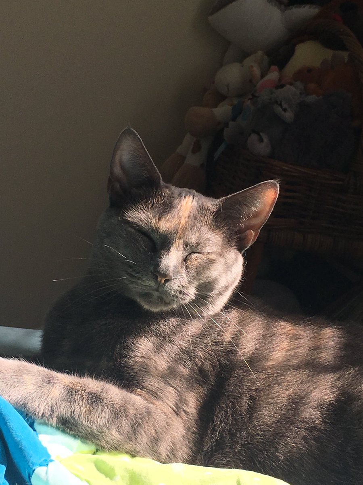
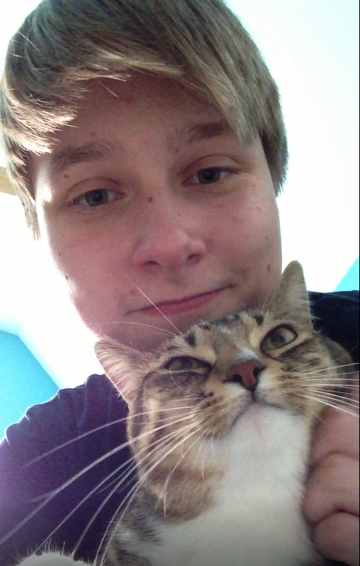
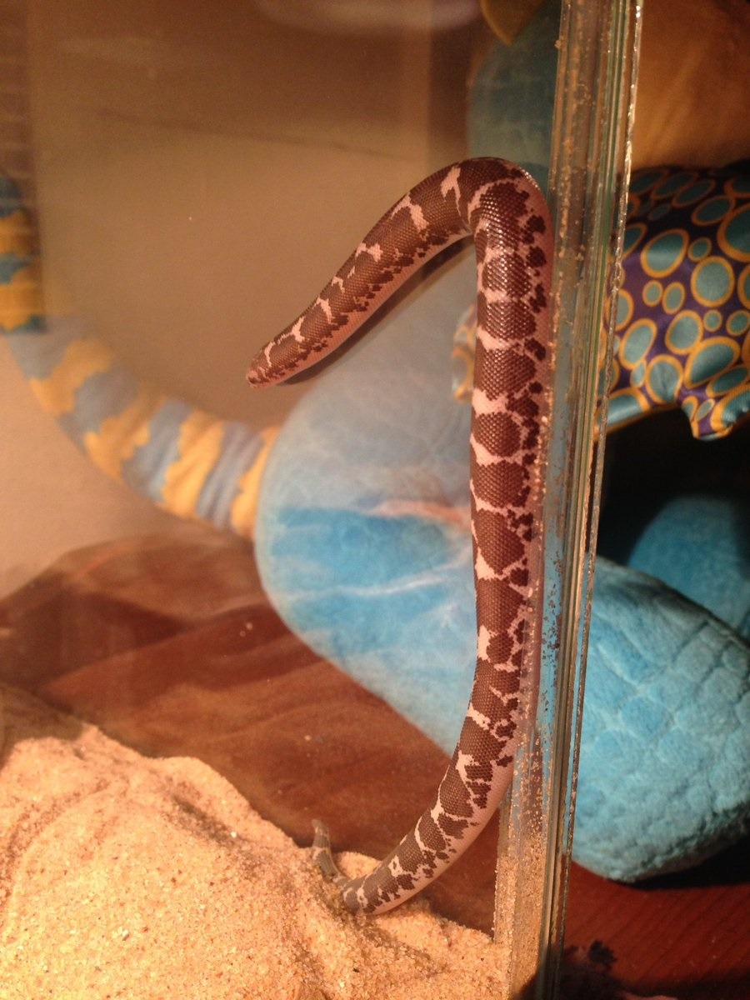
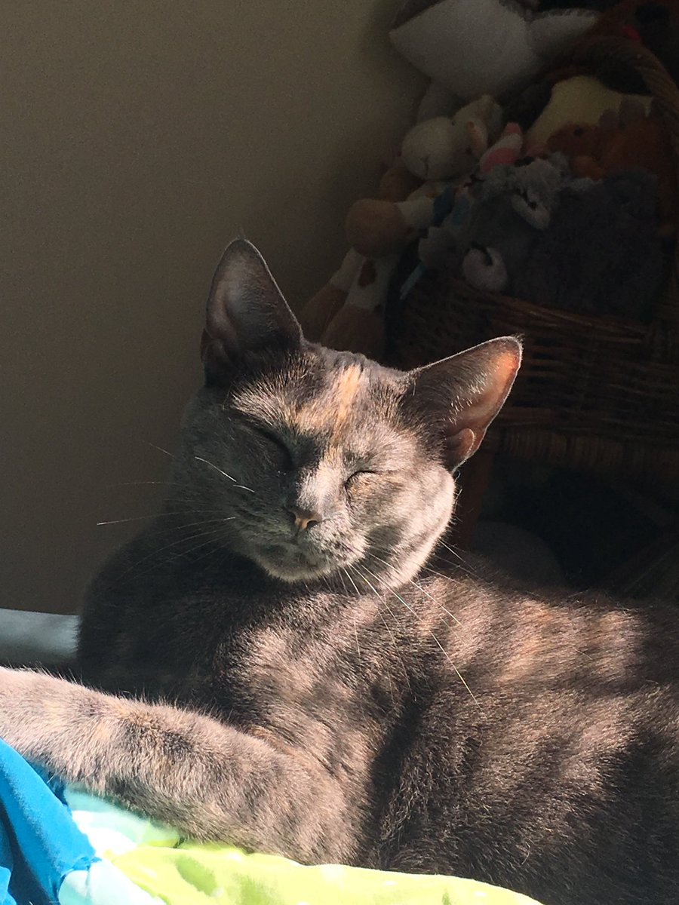
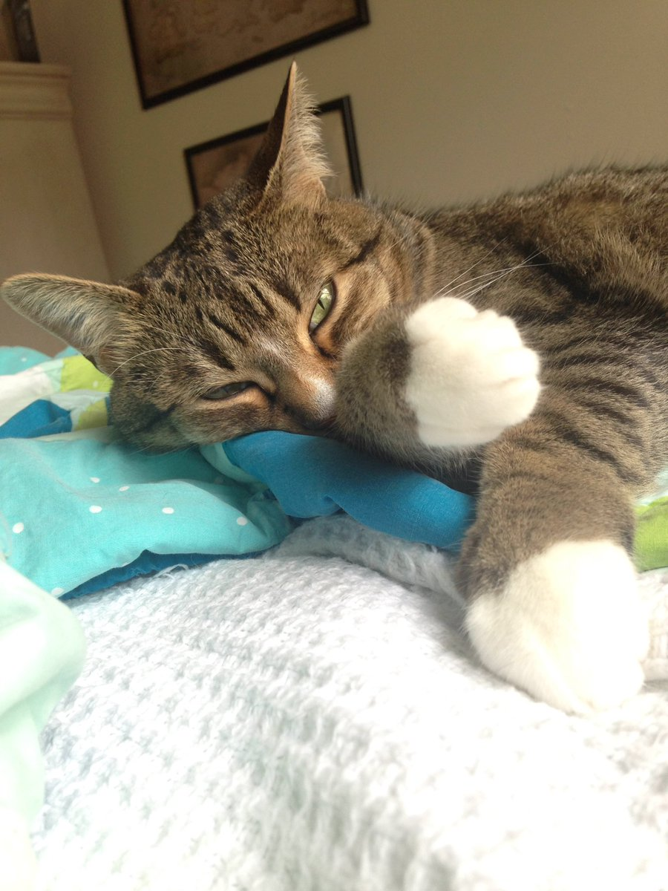
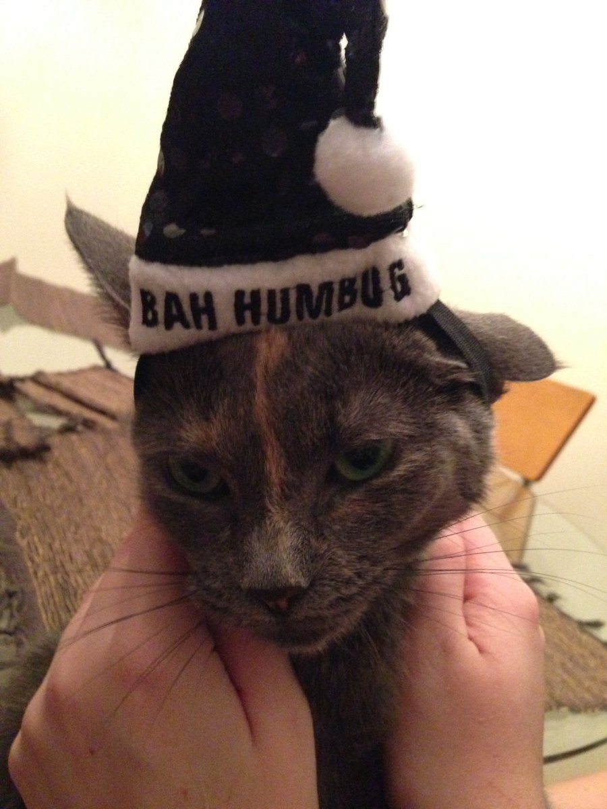
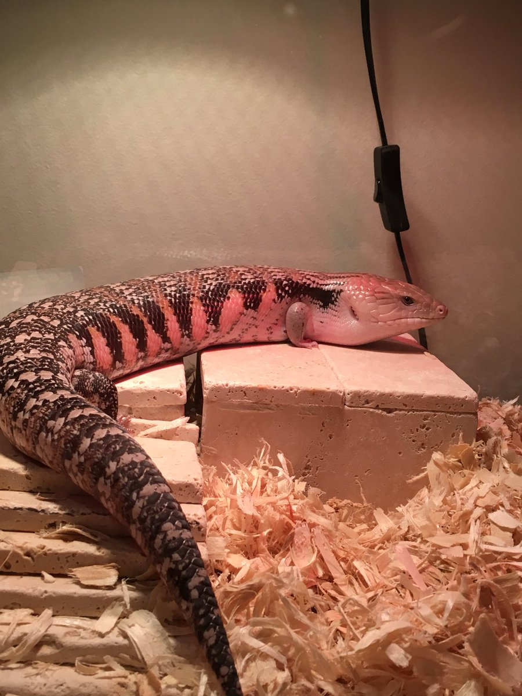
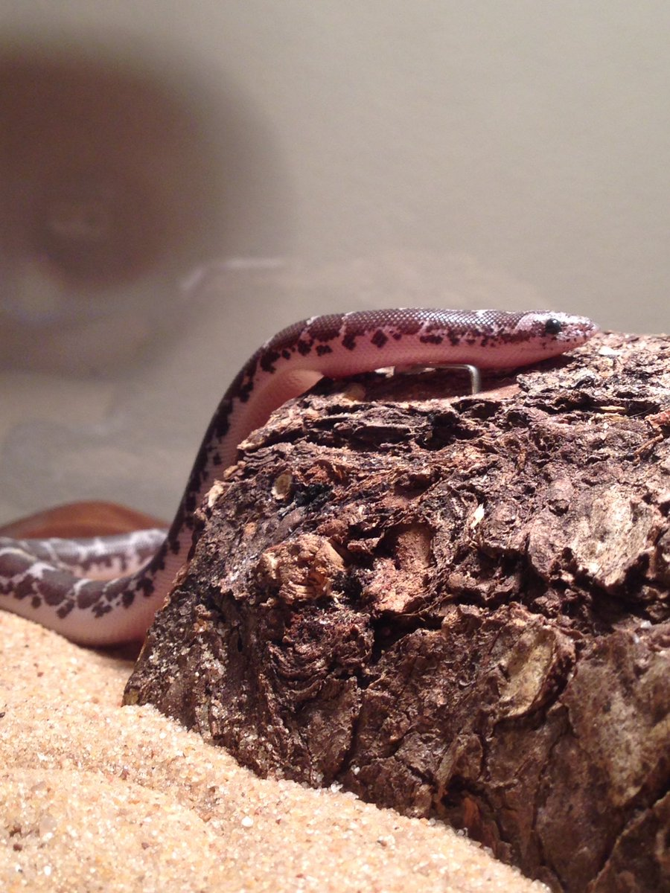

| Name & Species | Biography | Picture |
|---|---|---|
Karliah Felis Catus - Domestic Cat |
Born in a gutter on a friend's rooftop, Karliah's entrance to the world was less than glamorous, but her life now more than makes up for it. Karliah loves sleeping and having her chin scratched, and will fight anyone for chicken. She also loves to chew on pens, styluses, and expensive collectibles. Though she's not too friendly with strangers, she has a lot of love to give to those she trusts. |  |
Frisk Felis Catus - Domestic Cat |
Frisk is the definition of a sassy cat. She is very smart and knows how to get into pretty much anything, but mostly just uses that ability to search through drawers and bags looking for rubber bands to play with. She loves to go for walks outside, but has broken out of her leash and prompted a high-speed chase more than once. Her fierce demeanor has earned her a very sour reputation at our local vet. |  |
Jacket Tiliqua Scincoides- Northern Blue-tongued Skink |
Jacket is a beautiful boy who mostly keeps to himself and can act grumpy, but is all bark and no bite. He will eat anything and everything, but his favorite food is blueberries. He likes to burrow underneath blankets to get nice and warm. He hates having his feet and tail touched and will respond with a harmless, but unsettling hiss. His goofy, adorable little legs make him super fun to watch. |  | Smores Gongylophis Colubrinus - Kenyan Sand Boa |
Be careful around Smores, he looks a lot cuter than he acts! Ever since he was a baby Smores has been very feisty, and even today as an adult he responds to most interactions with a lot of biting. If the biting doesn't deter you, then he'll be sure to poop on you to get you to leave him alone. His temperment has been improving over time, so maybe one day his attitude will match his cute exterior. |  |
Lup Betta Splenden - Siamese Fighting Fish |
A shiny and strong little beast, Lup has about as much personality as any one betta fish can. She'll chase you around the glass hoping for some food, and when you offer some, she'll jump a good distance to get it. Lup is much happier in her big tank than she was when she was rescued from a tiny store cup, and her personality has really come forward now that she has room to shine. | 
|